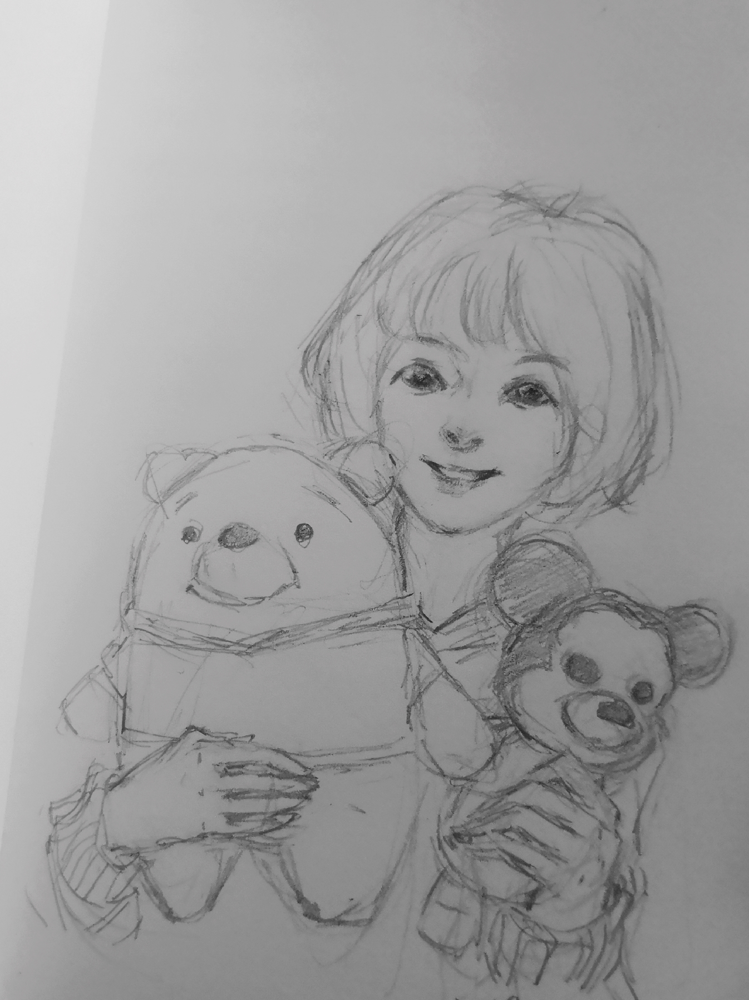

Yuchen Luo

Email: 592mcavoy@sjtu.edu.cn
Github: @592McAvoy
Biography
I am currenlty an undergraduate at Shanghai Jiao Tong University (SJTU). I have joined SJTU-ThinkLab and will start my postgraduate study in Fall 2020 under the supervision of Prof. Yan. I have strong interests in exploring the field of Computer Vision and Machine learning.
Education
Shanghai Jiao Tong University (SJTU), Shanghai, China (Sept.2016 – Present)- Bachelor in The School of Electronic Information and Electrical Engineering (SEIEE), Software Engineering(SE)
Research Experience
Image-Based 3D Textured body Reasoning [github]
Advisor: Cewu Lu, Machine Vision and Intelligence Group, SJTU
Advisor: Cewu Lu, Machine Vision and Intelligence Group, SJTU
- Generate 3D human body with full texture and median-level details based on single photo input.
- Conduct model rendering of RGB/Depth/Normal images.
- Apply mean-value coordinate transformation in naked model to recover geometry details such as clothed wrinkles and hairs.
Internship Experience
 Google, Shanghai, China (Jul.2019 – Sep.2019)
Google, Shanghai, China (Jul.2019 – Sep.2019)Software Engineering Intern, Amarna Team, Media Data Solutions Group
- Extract structured features from crawled URLs.
- Embrace AI technique to design a lightweight classifier to detect ephemeral URLs
- Integrate learned model into existing service to reduce resource cost and redundant query burden.
Tencent, Shenzhen, China (Oct.2019 – Present)
Research Intern, Computer Vision Center
Research Intern, Computer Vision Center
- GAN based human face synthesis and face swaping
Acknowledgement: css files come from shumochu. Thank you~